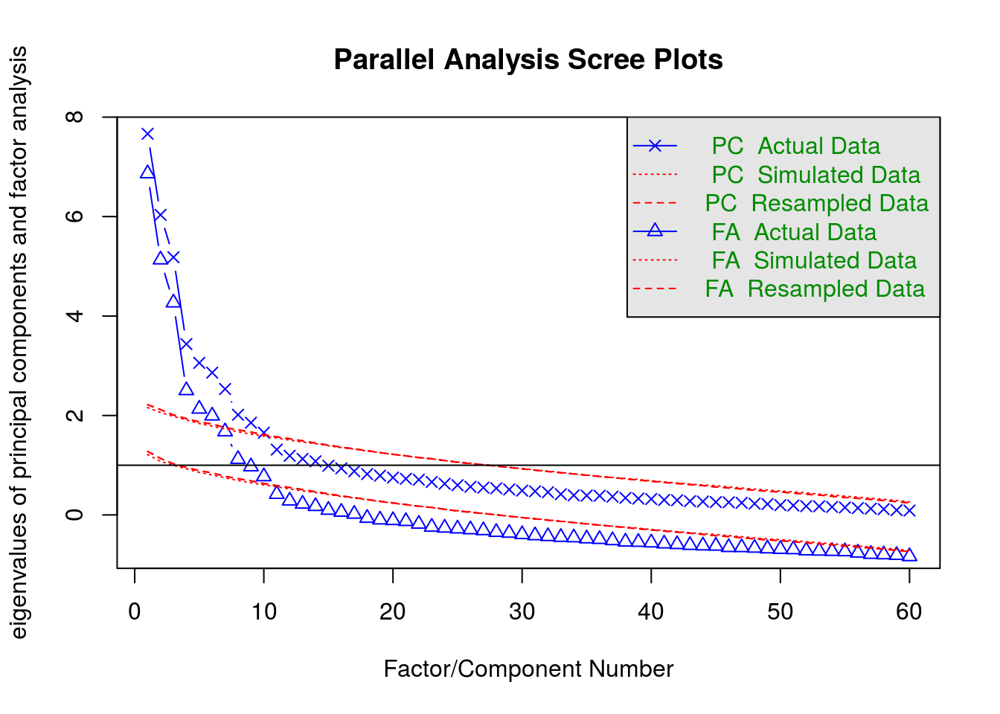

The below is a draft measurement model for the Fundamental Social Motives Inventory.
The CFA will not include kin care (missing data), family care (highly skewed), and mate retention general (highly skewed).
| Df | AIC | BIC | Chisq | Chisq diff | Df diff | Pr(>Chisq) | cfi | rmsea | mfi | aic | bic | |
|---|---|---|---|---|---|---|---|---|---|---|---|---|
| fsmi_cfa_matestat_method | 39 | 9382.57 | 9556.79 | 43.94 | NA | NA | NA | 0.99 | 0.02 | 0.99 | 9382.57 | 9556.79 |
| fsmi_cfa_matestat | 53 | 9394.90 | 9521.30 | 84.27 | 40.34 | 14 | 0 | 0.97 | 0.05 | 0.93 | 9394.90 | 9521.30 |

#> Parallel analysis suggests that the number of factors = 10 and the number of components = 10
#> Factor Analysis using method = ml
#> Call: psych::fa(r = fsmi_items, nfactors = 11, n.iter = 1, rotate = "bifactor",
#> scores = "tenBerge", missing = F, fm = "ml")
#> Standardized loadings (pattern matrix) based upon correlation matrix
#> ML1 ML6 ML5 ML2 ML4 ML3 ML7 ML9 ML10 ML8
#> fsmi_qs_31 0.59 0.33
#> fsmi_qs_32 0.43 0.68
#> fsmi_qs_33 0.50 0.64
#> fsmi_qs_34 -0.52
#> fsmi_qs_35 0.41
#> fsmi_qs_36 0.55
#> fsmi_qs_37 0.57
#> fsmi_qs_38 0.63
#> fsmi_qs_39 0.61
#> fsmi_qs_40 0.71 -0.29
#> fsmi_qs_41 0.45
#> fsmi_qs_42 0.64 0.25
#> fsmi_qs_43 -0.26 0.66
#> fsmi_qs_44 0.58
#> fsmi_qs_45 -0.39 0.47
#> fsmi_qs_46 0.71
#> fsmi_qs_47 0.70
#> fsmi_qs_48 0.79
#> fsmi_qs_25 -0.53
#> fsmi_qs_26 -0.61
#> fsmi_qs_27 -0.58
#> fsmi_qs_28 0.74
#> fsmi_qs_29 0.70
#> fsmi_qs_30 0.81
#> fsmi_qs_61 0.37 -0.65
#> fsmi_qs_62 0.51
#> fsmi_qs_63 0.62
#> fsmi_qs_64 0.58
#> fsmi_qs_65 0.41 -0.83
#> fsmi_qs_66 0.46 -0.75
#> fsmi_qs_1 0.34 0.74
#> fsmi_qs_2 0.39 0.61
#> fsmi_qs_3 0.40 -0.29
#> fsmi_qs_4 0.44
#> fsmi_qs_5
#> fsmi_qs_6 -0.49
#> fsmi_qs_7 0.25 0.77
#> fsmi_qs_8 0.35 0.57
#> fsmi_qs_9 0.83
#> fsmi_qs_10 0.28 0.78
#> fsmi_qs_11 0.28 0.52
#> fsmi_qs_12 0.73
#> fsmi_qs_19 0.75
#> fsmi_qs_20 0.64
#> fsmi_qs_21 -0.44
#> fsmi_qs_22 0.36 0.62
#> fsmi_qs_23 0.26 0.76
#> fsmi_qs_24 0.76
#> fsmi_qs_49 0.35 0.50
#> fsmi_qs_50 0.66
#> fsmi_qs_51 0.25 0.55
#> fsmi_qs_52 0.41 0.32
#> fsmi_qs_53 0.41 0.39
#> fsmi_qs_54 0.26
#> fsmi_qs_55 0.71
#> fsmi_qs_56 0.88
#> fsmi_qs_57 -0.71
#> fsmi_qs_58 -0.56
#> fsmi_qs_59 -0.47
#> fsmi_qs_60 0.88
#> ML11 h2 u2 com
#> fsmi_qs_31 0.57 0.43 2.4
#> fsmi_qs_32 0.67 0.33 1.8
#> fsmi_qs_33 0.72 0.28 2.3
#> fsmi_qs_34 0.35 0.65 1.6
#> fsmi_qs_35 0.31 0.69 2.9
#> fsmi_qs_36 0.37 0.63 1.5
#> fsmi_qs_37 0.56 0.69 0.31 2.3
#> fsmi_qs_38 0.46 0.64 0.36 2.1
#> fsmi_qs_39 0.52 0.70 0.30 2.3
#> fsmi_qs_40 0.76 0.24 2.2
#> fsmi_qs_41 0.32 0.49 0.51 4.2
#> fsmi_qs_42 0.60 0.40 2.1
#> fsmi_qs_43 0.66 0.34 2.2
#> fsmi_qs_44 0.46 0.54 1.7
#> fsmi_qs_45 0.46 0.54 2.7
#> fsmi_qs_46 0.59 0.41 1.3
#> fsmi_qs_47 0.53 0.47 1.2
#> fsmi_qs_48 0.65 0.35 1.1
#> fsmi_qs_25 0.34 0.66 1.4
#> fsmi_qs_26 0.47 0.53 1.6
#> fsmi_qs_27 0.40 0.60 1.4
#> fsmi_qs_28 0.60 0.40 1.2
#> fsmi_qs_29 0.52 0.48 1.1
#> fsmi_qs_30 0.68 0.32 1.1
#> fsmi_qs_61 0.63 0.37 1.9
#> fsmi_qs_62 0.38 0.62 2.1
#> fsmi_qs_63 0.52 0.48 1.7
#> fsmi_qs_64 0.45 0.55 1.8
#> fsmi_qs_65 0.86 0.14 1.5
#> fsmi_qs_66 0.80 0.20 1.8
#> fsmi_qs_1 0.76 0.24 1.8
#> fsmi_qs_2 0.57 0.43 1.9
#> fsmi_qs_3 0.33 0.67 3.1
#> fsmi_qs_4 0.29 0.39 0.61 3.2
#> fsmi_qs_5 0.13 0.87 4.0
#> fsmi_qs_6 0.36 0.64 2.2
#> fsmi_qs_7 0.72 0.28 1.4
#> fsmi_qs_8 0.50 0.50 2.0
#> fsmi_qs_9 0.76 0.24 1.2
#> fsmi_qs_10 0.74 0.26 1.4
#> fsmi_qs_11 0.41 0.59 2.0
#> fsmi_qs_12 0.63 0.37 1.4
#> fsmi_qs_19 0.68 0.32 1.4
#> fsmi_qs_20 0.54 0.46 1.6
#> fsmi_qs_21 0.34 0.66 2.7
#> fsmi_qs_22 0.58 0.42 2.0
#> fsmi_qs_23 0.67 0.33 1.3
#> fsmi_qs_24 0.62 0.38 1.1
#> fsmi_qs_49 0.38 0.62 1.9
#> fsmi_qs_50 0.52 0.48 1.5
#> fsmi_qs_51 0.41 0.59 1.8
#> fsmi_qs_52 0.33 0.67 2.7
#> fsmi_qs_53 0.37 0.63 2.6
#> fsmi_qs_54 0.26 0.74 5.2
#> fsmi_qs_55 0.62 0.38 1.5
#> fsmi_qs_56 0.85 0.15 1.2
#> fsmi_qs_57 0.57 0.43 1.2
#> fsmi_qs_58 0.45 0.55 2.0
#> fsmi_qs_59 0.34 0.66 2.3
#> fsmi_qs_60 0.85 0.15 1.2
#>
#> ML1 ML6 ML5 ML2 ML4 ML3 ML7 ML9 ML10 ML8
#> SS loadings 6.35 3.87 3.51 3.17 3.17 3.08 2.95 1.83 1.71 1.61
#> Proportion Var 0.11 0.06 0.06 0.05 0.05 0.05 0.05 0.03 0.03 0.03
#> Cumulative Var 0.11 0.17 0.23 0.28 0.33 0.39 0.43 0.47 0.49 0.52
#> Proportion Explained 0.19 0.12 0.11 0.10 0.10 0.09 0.09 0.06 0.05 0.05
#> Cumulative Proportion 0.19 0.31 0.42 0.52 0.62 0.71 0.80 0.86 0.91 0.96
#> ML11
#> SS loadings 1.33
#> Proportion Var 0.02
#> Cumulative Var 0.54
#> Proportion Explained 0.04
#> Cumulative Proportion 1.00
#>
#> Mean item complexity = 2
#> Test of the hypothesis that 11 factors are sufficient.
#>
#> The degrees of freedom for the null model are 1770 and the objective function was 37 with Chi Square of 7701.25
#> The degrees of freedom for the model are 1165 and the objective function was 8.12
#>
#> The root mean square of the residuals (RMSR) is 0.03
#> The df corrected root mean square of the residuals is 0.04
#>
#> The harmonic number of observations is 221 with the empirical chi square 822.43 with prob < 1
#> The total number of observations was 230 with Likelihood Chi Square = 1631.07 with prob < 3.4e-18
#>
#> Tucker Lewis Index of factoring reliability = 0.875
#> RMSEA index = 0.051 and the 90 % confidence intervals are 0.037 NA
#> BIC = -4704.29
#> Fit based upon off diagonal values = 0.97
#> Measures of factor score adequacy
#> ML1 ML6 ML5 ML2 ML4
#> Correlation of (regression) scores with factors 0.96 0.96 0.94 0.95 0.93
#> Multiple R square of scores with factors 0.92 0.93 0.89 0.90 0.87
#> Minimum correlation of possible factor scores 0.84 0.86 0.79 0.80 0.73
#> ML3 ML7 ML9 ML10 ML8
#> Correlation of (regression) scores with factors 0.93 0.93 0.89 0.87 0.89
#> Multiple R square of scores with factors 0.87 0.86 0.80 0.76 0.79
#> Minimum correlation of possible factor scores 0.74 0.72 0.60 0.51 0.58
#> ML11
#> Correlation of (regression) scores with factors 0.85
#> Multiple R square of scores with factors 0.72
#> Minimum correlation of possible factor scores 0.45
#>
#> Factor scores estimated using the tenBerge method have correlations of
#> ML1 ML6 ML5 ML2 ML4
#> Correlation of scores with factors 0.98 0.98 0.97 0.97 0.96
#> Multiple R square of scores with factors 0.96 0.96 0.94 0.95 0.93
#> Minimum correlation of possible factor scores 0.92 0.93 0.89 0.90 0.86
#> ML3 ML7 ML9 ML10 ML8
#> Correlation of scores with factors 0.97 0.96 0.95 0.93 0.94
#> Multiple R square of scores with factors 0.93 0.93 0.89 0.87 0.89
#> Minimum correlation of possible factor scores 0.87 0.86 0.79 0.74 0.77
#> ML11
#> Correlation of scores with factors 0.92
#> Multiple R square of scores with factors 0.85
#> Minimum correlation of possible factor scores 0.70| Df | AIC | BIC | Chisq | Chisq diff | Df diff | Pr(>Chisq) | cfi | rmsea | mfi | aic | bic | |
|---|---|---|---|---|---|---|---|---|---|---|---|---|
| fsmi_cfa_method | 1004 | 35415.74 | 36167.29 | 1685.742 | NA | NA | NA | 0.864 | 0.055 | 0.220 | 35415.74 | 36167.29 |
| fsmi_cfa | 1052 | 35670.44 | 36258.01 | 2036.439 | 350.697 | 48 | 0 | 0.804 | 0.064 | 0.112 | 35670.44 | 36258.01 |
#> lavaan (0.6-1.1193) converged normally after 124 iterations
#>
#> Used Total
#> Number of observations 225 230
#> Number of missing patterns 22
#>
#> Estimator ML
#> Model Fit Test Statistic 1685.742
#> Degrees of freedom 1004
#> P-value (Chi-square) 0.000
#>
#> Parameter Estimates:
#>
#> Information Observed
#> Observed information based on Hessian
#> Standard Errors Standard
#>
#> Latent Variables:
#> Estimate Std.Err z-value P(>|z|) Std.lv Std.all
#> fsmi_affgrp =~
#> fsmi_qs_31 0.729 0.082 8.891 0.000 0.729 0.545
#> fsmi_qs_32 1.075 0.087 12.425 0.000 1.075 0.752
#> fsmi_qs_33 1.030 0.074 13.874 0.000 1.030 0.815
#> fsmi_qs_34 -0.856 0.102 -8.401 0.000 -0.856 -0.565
#> fsmi_qs_35 0.445 0.073 6.121 0.000 0.445 0.419
#> fsmi_qs_36 0.432 0.082 5.269 0.000 0.432 0.348
#> fsmi_affexc =~
#> fsmi_qs_37 0.603 0.126 4.768 0.000 0.603 0.412
#> fsmi_qs_38 0.627 0.128 4.887 0.000 0.627 0.414
#> fsmi_qs_39 0.480 0.111 4.331 0.000 0.480 0.362
#> fsmi_qs_40 -0.372 0.134 -2.780 0.005 -0.372 -0.231
#> fsmi_qs_41 -0.324 0.152 -2.130 0.033 -0.324 -0.191
#> fsmi_qs_42 -0.559 0.148 -3.768 0.000 -0.559 -0.355
#> fsmi_affind =~
#> fsmi_qs_43 1.172 0.101 11.553 0.000 1.172 0.741
#> fsmi_qs_44 0.954 0.102 9.383 0.000 0.954 0.634
#> fsmi_qs_45 0.873 0.107 8.178 0.000 0.873 0.537
#> fsmi_qs_46 1.180 0.106 11.172 0.000 1.180 0.709
#> fsmi_qs_47 0.916 0.090 10.197 0.000 0.916 0.664
#> fsmi_qs_48 1.119 0.091 12.342 0.000 1.119 0.766
#> fsmi_dis =~
#> fsmi_qs_25 -0.871 0.107 -8.180 0.000 -0.871 -0.549
#> fsmi_qs_26 -0.926 0.100 -9.211 0.000 -0.926 -0.604
#> fsmi_qs_27 -0.959 0.107 -8.937 0.000 -0.959 -0.589
#> fsmi_qs_28 1.218 0.097 12.513 0.000 1.218 0.763
#> fsmi_qs_29 1.048 0.095 10.987 0.000 1.048 0.695
#> fsmi_qs_30 1.234 0.094 13.107 0.000 1.234 0.793
#> fsmi_retbrk =~
#> fsmi_qs_7 1.330 0.096 13.868 0.000 1.330 0.769
#> fsmi_qs_8 0.970 0.101 9.623 0.000 0.970 0.584
#> fsmi_qs_9 1.362 0.089 15.222 0.000 1.362 0.834
#> fsmi_qs_10 1.349 0.094 14.278 0.000 1.349 0.788
#> fsmi_qs_11 0.787 0.100 7.861 0.000 0.787 0.506
#> fsmi_qs_12 1.108 0.092 12.013 0.000 1.108 0.717
#> fsmi_prot =~
#> fsmi_qs_19 1.245 0.092 13.584 0.000 1.245 0.787
#> fsmi_qs_20 0.928 0.081 11.462 0.000 0.928 0.700
#> fsmi_qs_21 -0.676 0.089 -7.602 0.000 -0.676 -0.505
#> fsmi_qs_22 1.060 0.090 11.846 0.000 1.060 0.696
#> fsmi_qs_23 1.184 0.088 13.466 0.000 1.184 0.782
#> fsmi_qs_24 0.984 0.080 12.275 0.000 0.984 0.740
#> fsmi_stat =~
#> fsmi_qs_49 0.794 0.105 7.592 0.000 0.794 0.545
#> fsmi_qs_50 0.897 0.101 8.862 0.000 0.897 0.651
#> fsmi_qs_51 0.794 0.092 8.671 0.000 0.794 0.623
#> fsmi_qs_52 0.631 0.099 6.344 0.000 0.631 0.446
#> fsmi_qs_53 0.749 0.098 7.672 0.000 0.749 0.546
#> fsmi_qs_54 -0.289 0.105 -2.753 0.006 -0.289 -0.209
#> fsmi_mate =~
#> fsmi_qs_55 1.350 0.105 12.836 0.000 1.350 0.731
#> fsmi_qs_56 1.841 0.107 17.229 0.000 1.841 0.888
#> fsmi_qs_57 -1.418 0.117 -12.069 0.000 -1.418 -0.712
#> fsmi_qs_58 -1.040 0.112 -9.305 0.000 -1.040 -0.587
#> fsmi_qs_59 -0.906 0.119 -7.626 0.000 -0.906 -0.494
#> fsmi_qs_60 1.874 0.107 17.513 0.000 1.874 0.902
#> method =~
#> fsmi_qs_31 0.620 0.092 6.723 0.000 0.620 0.464
#> fsmi_qs_32 0.315 0.104 3.025 0.002 0.315 0.221
#> fsmi_qs_33 0.277 0.092 3.021 0.003 0.277 0.219
#> fsmi_qs_34 0.142 0.110 1.292 0.196 0.142 0.094
#> fsmi_qs_35 0.213 0.075 2.849 0.004 0.213 0.200
#> fsmi_qs_36 0.505 0.084 5.989 0.000 0.505 0.407
#> fsmi_qs_37 1.030 0.103 10.031 0.000 1.030 0.704
#> fsmi_qs_38 1.114 0.105 10.589 0.000 1.114 0.735
#> fsmi_qs_39 0.927 0.091 10.193 0.000 0.927 0.700
#> fsmi_qs_40 1.222 0.102 12.015 0.000 1.222 0.760
#> fsmi_qs_41 1.118 0.109 10.247 0.000 1.118 0.659
#> fsmi_qs_42 1.205 0.103 11.654 0.000 1.205 0.765
#> fsmi_qs_43 -0.043 0.121 -0.356 0.722 -0.043 -0.027
#> fsmi_qs_44 -0.097 0.112 -0.863 0.388 -0.097 -0.065
#> fsmi_qs_45 -0.499 0.116 -4.311 0.000 -0.499 -0.307
#> fsmi_qs_46 -0.214 0.122 -1.760 0.078 -0.214 -0.129
#> fsmi_qs_47 0.201 0.101 1.996 0.046 0.201 0.146
#> fsmi_qs_48 -0.012 0.109 -0.113 0.910 -0.012 -0.008
#> fsmi_qs_25 0.272 0.111 2.443 0.015 0.272 0.171
#> fsmi_qs_26 0.258 0.107 2.404 0.016 0.258 0.168
#> fsmi_qs_27 0.247 0.116 2.132 0.033 0.247 0.152
#> fsmi_qs_28 -0.058 0.113 -0.511 0.609 -0.058 -0.036
#> fsmi_qs_29 0.086 0.106 0.813 0.416 0.086 0.057
#> fsmi_qs_30 0.017 0.110 0.159 0.874 0.017 0.011
#> fsmi_qs_7 0.584 0.125 4.656 0.000 0.584 0.338
#> fsmi_qs_8 0.637 0.118 5.403 0.000 0.637 0.384
#> fsmi_qs_9 0.384 0.119 3.228 0.001 0.384 0.235
#> fsmi_qs_10 0.571 0.126 4.520 0.000 0.571 0.333
#> fsmi_qs_11 0.446 0.111 4.003 0.000 0.446 0.287
#> fsmi_qs_12 0.284 0.113 2.511 0.012 0.284 0.184
#> fsmi_qs_19 0.259 0.113 2.295 0.022 0.259 0.163
#> fsmi_qs_20 0.167 0.094 1.778 0.075 0.167 0.126
#> fsmi_qs_21 -0.049 0.095 -0.519 0.604 -0.049 -0.037
#> fsmi_qs_22 0.428 0.106 4.042 0.000 0.428 0.281
#> fsmi_qs_23 0.215 0.106 2.021 0.043 0.215 0.142
#> fsmi_qs_24 0.086 0.094 0.920 0.358 0.086 0.065
#> fsmi_qs_49 0.318 0.102 3.105 0.002 0.318 0.218
#> fsmi_qs_50 -0.066 0.100 -0.661 0.508 -0.066 -0.048
#> fsmi_qs_51 0.176 0.090 1.949 0.051 0.176 0.138
#> fsmi_qs_52 0.530 0.096 5.511 0.000 0.530 0.375
#> fsmi_qs_53 0.333 0.096 3.478 0.001 0.333 0.243
#> fsmi_qs_54 -0.360 0.096 -3.756 0.000 -0.360 -0.261
#> fsmi_qs_55 0.432 0.128 3.366 0.001 0.432 0.234
#> fsmi_qs_56 0.433 0.144 3.002 0.003 0.433 0.209
#> fsmi_qs_57 -0.252 0.139 -1.813 0.070 -0.252 -0.127
#> fsmi_qs_58 -0.039 0.125 -0.311 0.756 -0.039 -0.022
#> fsmi_qs_59 -0.217 0.128 -1.689 0.091 -0.217 -0.118
#> fsmi_qs_60 0.351 0.145 2.417 0.016 0.351 0.169
#>
#> Covariances:
#> Estimate Std.Err z-value P(>|z|) Std.lv Std.all
#> fsmi_affgrp ~~
#> method 0.000 0.000 0.000
#> fsmi_affexc ~~
#> method 0.000 0.000 0.000
#> fsmi_affind ~~
#> method 0.000 0.000 0.000
#> fsmi_dis ~~
#> method 0.000 0.000 0.000
#> fsmi_retbrk ~~
#> method 0.000 0.000 0.000
#> fsmi_prot ~~
#> method 0.000 0.000 0.000
#> fsmi_stat ~~
#> method 0.000 0.000 0.000
#> fsmi_mate ~~
#> method 0.000 0.000 0.000
#> fsmi_affgrp ~~
#> fsmi_affexc 0.276 0.093 2.973 0.003 0.276 0.276
#> fsmi_affind -0.388 0.074 -5.216 0.000 -0.388 -0.388
#> fsmi_dis 0.168 0.078 2.154 0.031 0.168 0.168
#> fsmi_retbrk 0.015 0.078 0.194 0.847 0.015 0.015
#> fsmi_prot 0.125 0.078 1.610 0.107 0.125 0.125
#> fsmi_stat 0.296 0.082 3.600 0.000 0.296 0.296
#> fsmi_mate 0.126 0.075 1.670 0.095 0.126 0.126
#> fsmi_affexc ~~
#> fsmi_affind -0.375 0.081 -4.610 0.000 -0.375 -0.375
#> fsmi_dis 0.042 0.090 0.466 0.641 0.042 0.042
#> fsmi_retbrk -0.310 0.087 -3.547 0.000 -0.310 -0.310
#> fsmi_prot -0.107 0.089 -1.200 0.230 -0.107 -0.107
#> fsmi_stat 0.136 0.099 1.374 0.170 0.136 0.136
#> fsmi_mate -0.031 0.089 -0.346 0.730 -0.031 -0.031
#> fsmi_affind ~~
#> fsmi_dis -0.090 0.079 -1.145 0.252 -0.090 -0.090
#> fsmi_retbrk 0.140 0.077 1.817 0.069 0.140 0.140
#> fsmi_prot 0.158 0.076 2.072 0.038 0.158 0.158
#> fsmi_stat 0.046 0.088 0.528 0.597 0.046 0.046
#> fsmi_mate -0.072 0.075 -0.955 0.340 -0.072 -0.072
#> fsmi_dis ~~
#> fsmi_retbrk 0.092 0.078 1.192 0.233 0.092 0.092
#> fsmi_prot -0.206 0.076 -2.721 0.007 -0.206 -0.206
#> fsmi_stat 0.050 0.086 0.586 0.558 0.050 0.050
#> fsmi_mate 0.111 0.075 1.487 0.137 0.111 0.111
#> fsmi_retbrk ~~
#> fsmi_prot 0.021 0.077 0.278 0.781 0.021 0.021
#> fsmi_stat -0.011 0.084 -0.135 0.892 -0.011 -0.011
#> fsmi_mate 0.339 0.066 5.109 0.000 0.339 0.339
#> fsmi_prot ~~
#> fsmi_stat 0.280 0.080 3.505 0.000 0.280 0.280
#> fsmi_mate -0.165 0.073 -2.267 0.023 -0.165 -0.165
#> fsmi_stat ~~
#> fsmi_mate 0.047 0.082 0.569 0.569 0.047 0.047
#>
#> Intercepts:
#> Estimate Std.Err z-value P(>|z|) Std.lv Std.all
#> .fsmi_qs_31 5.028 0.089 56.310 0.000 5.028 3.763
#> .fsmi_qs_32 5.009 0.095 52.548 0.000 5.009 3.503
#> .fsmi_qs_33 5.440 0.084 64.561 0.000 5.440 4.304
#> .fsmi_qs_34 3.733 0.101 36.979 0.000 3.733 2.465
#> .fsmi_qs_35 5.480 0.071 77.341 0.000 5.480 5.156
#> .fsmi_qs_36 5.600 0.083 67.738 0.000 5.600 4.516
#> .fsmi_qs_37 4.900 0.098 49.889 0.000 4.900 3.347
#> .fsmi_qs_38 4.705 0.102 46.284 0.000 4.705 3.105
#> .fsmi_qs_39 4.927 0.089 55.316 0.000 4.927 3.720
#> .fsmi_qs_40 4.796 0.108 44.421 0.000 4.796 2.982
#> .fsmi_qs_41 4.321 0.114 37.906 0.000 4.321 2.547
#> .fsmi_qs_42 4.821 0.106 45.571 0.000 4.821 3.062
#> .fsmi_qs_43 3.714 0.106 35.144 0.000 3.714 2.349
#> .fsmi_qs_44 3.107 0.100 30.937 0.000 3.107 2.066
#> .fsmi_qs_45 3.314 0.109 30.541 0.000 3.314 2.039
#> .fsmi_qs_46 4.738 0.111 42.597 0.000 4.738 2.847
#> .fsmi_qs_47 5.330 0.092 57.821 0.000 5.330 3.861
#> .fsmi_qs_48 4.796 0.097 49.219 0.000 4.796 3.281
#> .fsmi_qs_25 4.044 0.106 38.198 0.000 4.044 2.547
#> .fsmi_qs_26 4.604 0.103 44.874 0.000 4.604 3.002
#> .fsmi_qs_27 3.563 0.109 32.793 0.000 3.563 2.190
#> .fsmi_qs_28 3.884 0.107 36.405 0.000 3.884 2.434
#> .fsmi_qs_29 3.784 0.101 37.560 0.000 3.784 2.509
#> .fsmi_qs_30 3.889 0.104 37.373 0.000 3.889 2.499
#> .fsmi_qs_7 3.562 0.116 30.617 0.000 3.562 2.059
#> .fsmi_qs_8 3.592 0.112 32.106 0.000 3.592 2.163
#> .fsmi_qs_9 3.507 0.110 31.916 0.000 3.507 2.147
#> .fsmi_qs_10 3.648 0.115 31.689 0.000 3.648 2.131
#> .fsmi_qs_11 3.784 0.105 36.090 0.000 3.784 2.434
#> .fsmi_qs_12 3.458 0.104 33.280 0.000 3.458 2.240
#> .fsmi_qs_19 4.627 0.106 43.748 0.000 4.627 2.923
#> .fsmi_qs_20 4.945 0.089 55.850 0.000 4.945 3.728
#> .fsmi_qs_21 3.040 0.089 34.088 0.000 3.040 2.273
#> .fsmi_qs_22 4.632 0.102 45.461 0.000 4.632 3.038
#> .fsmi_qs_23 4.956 0.101 49.106 0.000 4.956 3.274
#> .fsmi_qs_24 5.259 0.089 59.225 0.000 5.259 3.959
#> .fsmi_qs_49 4.637 0.097 47.679 0.000 4.637 3.184
#> .fsmi_qs_50 5.029 0.092 54.471 0.000 5.029 3.650
#> .fsmi_qs_51 4.707 0.085 55.302 0.000 4.707 3.693
#> .fsmi_qs_52 4.243 0.095 44.900 0.000 4.243 2.998
#> .fsmi_qs_53 5.044 0.091 55.149 0.000 5.044 3.677
#> .fsmi_qs_54 4.184 0.092 45.343 0.000 4.184 3.029
#> .fsmi_qs_55 3.545 0.123 28.756 0.000 3.545 1.919
#> .fsmi_qs_56 3.820 0.138 27.618 0.000 3.820 1.843
#> .fsmi_qs_57 3.667 0.133 27.623 0.000 3.667 1.842
#> .fsmi_qs_58 4.649 0.119 39.206 0.000 4.649 2.622
#> .fsmi_qs_59 3.402 0.123 27.758 0.000 3.402 1.854
#> .fsmi_qs_60 3.622 0.138 26.156 0.000 3.622 1.744
#> fsmi_affgrp 0.000 0.000 0.000
#> fsmi_affexc 0.000 0.000 0.000
#> fsmi_affind 0.000 0.000 0.000
#> fsmi_dis 0.000 0.000 0.000
#> fsmi_retbrk 0.000 0.000 0.000
#> fsmi_prot 0.000 0.000 0.000
#> fsmi_stat 0.000 0.000 0.000
#> fsmi_mate 0.000 0.000 0.000
#> method 0.000 0.000 0.000
#>
#> Variances:
#> Estimate Std.Err z-value P(>|z|) Std.lv Std.all
#> .fsmi_qs_31 0.870 0.095 9.153 0.000 0.870 0.487
#> .fsmi_qs_32 0.789 0.106 7.461 0.000 0.789 0.386
#> .fsmi_qs_33 0.460 0.078 5.870 0.000 0.460 0.288
#> .fsmi_qs_34 1.541 0.164 9.369 0.000 1.541 0.672
#> .fsmi_qs_35 0.886 0.087 10.159 0.000 0.886 0.785
#> .fsmi_qs_36 1.096 0.108 10.145 0.000 1.096 0.713
#> .fsmi_qs_37 0.718 0.101 7.121 0.000 0.718 0.335
#> .fsmi_qs_38 0.663 0.107 6.177 0.000 0.663 0.289
#> .fsmi_qs_39 0.665 0.088 7.530 0.000 0.665 0.379
#> .fsmi_qs_40 0.954 0.130 7.317 0.000 0.954 0.369
#> .fsmi_qs_41 1.522 0.170 8.935 0.000 1.522 0.529
#> .fsmi_qs_42 0.714 0.142 5.045 0.000 0.714 0.288
#> .fsmi_qs_43 1.125 0.153 7.373 0.000 1.125 0.450
#> .fsmi_qs_44 1.343 0.154 8.727 0.000 1.343 0.594
#> .fsmi_qs_45 1.629 0.173 9.387 0.000 1.629 0.617
#> .fsmi_qs_46 1.330 0.167 7.984 0.000 1.330 0.480
#> .fsmi_qs_47 1.026 0.121 8.450 0.000 1.026 0.538
#> .fsmi_qs_48 0.884 0.120 7.335 0.000 0.884 0.414
#> .fsmi_qs_25 1.689 0.179 9.463 0.000 1.689 0.670
#> .fsmi_qs_26 1.429 0.156 9.131 0.000 1.429 0.608
#> .fsmi_qs_27 1.667 0.179 9.291 0.000 1.667 0.630
#> .fsmi_qs_28 1.060 0.136 7.780 0.000 1.060 0.416
#> .fsmi_qs_29 1.168 0.136 8.576 0.000 1.168 0.514
#> .fsmi_qs_30 0.900 0.127 7.091 0.000 0.900 0.372
#> .fsmi_qs_7 0.880 0.107 8.208 0.000 0.880 0.294
#> .fsmi_qs_8 1.410 0.147 9.616 0.000 1.410 0.511
#> .fsmi_qs_9 0.665 0.092 7.246 0.000 0.665 0.249
#> .fsmi_qs_10 0.784 0.100 7.817 0.000 0.784 0.268
#> .fsmi_qs_11 1.600 0.160 9.977 0.000 1.600 0.662
#> .fsmi_qs_12 1.076 0.118 9.147 0.000 1.076 0.451
#> .fsmi_qs_19 0.888 0.113 7.873 0.000 0.888 0.354
#> .fsmi_qs_20 0.870 0.096 9.052 0.000 0.870 0.494
#> .fsmi_qs_21 1.330 0.132 10.058 0.000 1.330 0.743
#> .fsmi_qs_22 1.017 0.115 8.842 0.000 1.017 0.437
#> .fsmi_qs_23 0.843 0.105 8.058 0.000 0.843 0.368
#> .fsmi_qs_24 0.790 0.092 8.622 0.000 0.790 0.448
#> .fsmi_qs_49 1.391 0.159 8.742 0.000 1.391 0.656
#> .fsmi_qs_50 1.090 0.148 7.362 0.000 1.090 0.574
#> .fsmi_qs_51 0.963 0.122 7.902 0.000 0.963 0.593
#> .fsmi_qs_52 1.324 0.143 9.259 0.000 1.324 0.661
#> .fsmi_qs_53 1.211 0.139 8.741 0.000 1.211 0.643
#> .fsmi_qs_54 1.694 0.164 10.329 0.000 1.694 0.888
#> .fsmi_qs_55 1.403 0.149 9.391 0.000 1.403 0.411
#> .fsmi_qs_56 0.719 0.108 6.628 0.000 0.719 0.167
#> .fsmi_qs_57 1.891 0.197 9.620 0.000 1.891 0.477
#> .fsmi_qs_58 2.060 0.204 10.083 0.000 2.060 0.655
#> .fsmi_qs_59 2.500 0.243 10.280 0.000 2.500 0.742
#> .fsmi_qs_60 0.679 0.108 6.259 0.000 0.679 0.157
#> fsmi_affgrp 1.000 1.000 1.000
#> fsmi_affexc 1.000 1.000 1.000
#> fsmi_affind 1.000 1.000 1.000
#> fsmi_dis 1.000 1.000 1.000
#> fsmi_retbrk 1.000 1.000 1.000
#> fsmi_prot 1.000 1.000 1.000
#> fsmi_stat 1.000 1.000 1.000
#> fsmi_mate 1.000 1.000 1.000
#> method 1.000 1.000 1.000| Df | AIC | BIC | Chisq | Chisq diff | Df diff | Pr(>Chisq) | cfi | rmsea | mfi | aic | bic | |
|---|---|---|---|---|---|---|---|---|---|---|---|---|
| fsmi_cfa_method | 1004 | 35415.74 | 36167.29 | 1685.742 | NA | NA | NA | 0.864 | 0.055 | 0.220 | 35415.74 | 36167.29 |
| fsmi_cfa_method_dev | 1044 | 36833.50 | 37622.29 | 1832.547 | 146.805 | 40 | 0 | 0.852 | 0.057 | 0.187 | 36833.50 | 37622.29 |
#> lavaan (0.6-1.1193) converged normally after 129 iterations
#>
#> Used Total
#> Number of observations 235 243
#> Number of missing patterns 23
#>
#> Estimator ML
#> Model Fit Test Statistic 1832.547
#> Degrees of freedom 1044
#> P-value (Chi-square) 0.000
#>
#> Parameter Estimates:
#>
#> Information Observed
#> Observed information based on Hessian
#> Standard Errors Standard
#>
#> Latent Variables:
#> Estimate Std.Err z-value P(>|z|) Std.lv Std.all
#> fsmi_affgrp =~
#> fsmi_qs_31 0.698 0.079 8.841 0.000 0.715 0.536
#> fsmi_qs_32 1.037 0.084 12.359 0.000 1.062 0.741
#> fsmi_qs_33 0.994 0.072 13.834 0.000 1.018 0.806
#> fsmi_qs_34 -0.820 0.097 -8.426 0.000 -0.840 -0.561
#> fsmi_qs_35 0.432 0.070 6.143 0.000 0.443 0.414
#> fsmi_qs_36 0.417 0.079 5.247 0.000 0.427 0.341
#> fsmi_affexc =~
#> fsmi_qs_37 0.616 0.126 4.874 0.000 0.618 0.427
#> fsmi_qs_38 0.614 0.125 4.923 0.000 0.617 0.413
#> fsmi_qs_39 0.489 0.108 4.526 0.000 0.491 0.374
#> fsmi_qs_40 -0.351 0.133 -2.648 0.008 -0.353 -0.220
#> fsmi_qs_41 -0.288 0.153 -1.885 0.059 -0.290 -0.172
#> fsmi_qs_42 -0.535 0.149 -3.601 0.000 -0.537 -0.342
#> fsmi_affind =~
#> fsmi_qs_43 1.142 0.099 11.498 0.000 1.142 0.732
#> fsmi_qs_44 0.920 0.100 9.247 0.000 0.921 0.621
#> fsmi_qs_45 0.860 0.105 8.206 0.000 0.861 0.533
#> fsmi_qs_46 1.180 0.103 11.442 0.000 1.181 0.712
#> fsmi_qs_47 0.915 0.088 10.368 0.000 0.915 0.667
#> fsmi_qs_48 1.115 0.088 12.606 0.000 1.116 0.769
#> fsmi_dis =~
#> fsmi_qs_25 -0.859 0.104 -8.292 0.000 -0.869 -0.550
#> fsmi_qs_26 -0.907 0.097 -9.371 0.000 -0.918 -0.606
#> fsmi_qs_27 -0.946 0.104 -9.118 0.000 -0.957 -0.592
#> fsmi_qs_28 1.198 0.094 12.684 0.000 1.212 0.763
#> fsmi_qs_29 1.033 0.094 10.947 0.000 1.045 0.687
#> fsmi_qs_30 1.196 0.092 13.029 0.000 1.210 0.784
#> fsmi_retbrk =~
#> fsmi_qs_7 1.329 0.094 14.148 0.000 1.332 0.769
#> fsmi_qs_8 0.990 0.099 9.954 0.000 0.992 0.591
#> fsmi_qs_9 1.371 0.088 15.651 0.000 1.374 0.835
#> fsmi_qs_10 1.366 0.093 14.742 0.000 1.369 0.792
#> fsmi_qs_11 0.787 0.099 7.937 0.000 0.788 0.500
#> fsmi_qs_12 1.110 0.091 12.249 0.000 1.113 0.716
#> fsmi_prot =~
#> fsmi_qs_19 1.208 0.086 14.037 0.000 1.248 0.799
#> fsmi_qs_20 0.897 0.077 11.627 0.000 0.927 0.704
#> fsmi_qs_21 -0.669 0.084 -7.992 0.000 -0.691 -0.520
#> fsmi_qs_22 1.044 0.084 12.380 0.000 1.078 0.715
#> fsmi_qs_23 1.093 0.085 12.811 0.000 1.129 0.756
#> fsmi_qs_24 0.939 0.077 12.247 0.000 0.970 0.736
#> fsmi_stat =~
#> fsmi_qs_49 0.734 0.101 7.299 0.000 0.759 0.522
#> fsmi_qs_50 0.810 0.097 8.335 0.000 0.838 0.615
#> fsmi_qs_51 0.761 0.088 8.684 0.000 0.787 0.618
#> fsmi_qs_52 0.636 0.093 6.832 0.000 0.658 0.465
#> fsmi_qs_53 0.727 0.091 7.983 0.000 0.752 0.549
#> fsmi_qs_54 -0.279 0.099 -2.809 0.005 -0.288 -0.210
#> fsmi_mate =~
#> fsmi_qs_55 1.354 0.102 13.284 0.000 1.372 0.740
#> fsmi_qs_56 1.827 0.104 17.569 0.000 1.851 0.889
#> fsmi_qs_57 -1.423 0.114 -12.513 0.000 -1.442 -0.722
#> fsmi_qs_58 -1.035 0.108 -9.606 0.000 -1.048 -0.593
#> fsmi_qs_59 -0.905 0.116 -7.833 0.000 -0.917 -0.497
#> fsmi_qs_60 1.841 0.104 17.712 0.000 1.865 0.897
#> method =~
#> fsmi_qs_31 0.634 0.091 6.993 0.000 0.634 0.476
#> fsmi_qs_32 0.344 0.104 3.306 0.001 0.344 0.240
#> fsmi_qs_33 0.321 0.091 3.522 0.000 0.321 0.254
#> fsmi_qs_34 0.099 0.108 0.915 0.360 0.099 0.066
#> fsmi_qs_35 0.225 0.074 3.047 0.002 0.225 0.211
#> fsmi_qs_36 0.536 0.084 6.406 0.000 0.536 0.428
#> fsmi_qs_37 1.010 0.105 9.648 0.000 1.010 0.697
#> fsmi_qs_38 1.085 0.106 10.256 0.000 1.085 0.727
#> fsmi_qs_39 0.920 0.092 10.010 0.000 0.920 0.701
#> fsmi_qs_40 1.225 0.099 12.325 0.000 1.225 0.766
#> fsmi_qs_41 1.123 0.106 10.636 0.000 1.123 0.666
#> fsmi_qs_42 1.220 0.101 12.036 0.000 1.220 0.777
#> fsmi_qs_43 -0.062 0.120 -0.514 0.607 -0.062 -0.040
#> fsmi_qs_44 -0.093 0.111 -0.838 0.402 -0.093 -0.063
#> fsmi_qs_45 -0.525 0.115 -4.574 0.000 -0.525 -0.325
#> fsmi_qs_46 -0.238 0.121 -1.959 0.050 -0.238 -0.144
#> fsmi_qs_47 0.189 0.100 1.891 0.059 0.189 0.138
#> fsmi_qs_48 -0.018 0.109 -0.168 0.867 -0.018 -0.013
#> fsmi_qs_25 0.238 0.110 2.170 0.030 0.238 0.151
#> fsmi_qs_26 0.241 0.105 2.302 0.021 0.241 0.159
#> fsmi_qs_27 0.233 0.114 2.047 0.041 0.233 0.144
#> fsmi_qs_28 -0.020 0.112 -0.177 0.859 -0.020 -0.012
#> fsmi_qs_29 0.120 0.106 1.136 0.256 0.120 0.079
#> fsmi_qs_30 0.040 0.108 0.375 0.708 0.040 0.026
#> fsmi_qs_7 0.595 0.125 4.777 0.000 0.595 0.343
#> fsmi_qs_8 0.640 0.118 5.414 0.000 0.640 0.382
#> fsmi_qs_9 0.418 0.119 3.504 0.000 0.418 0.254
#> fsmi_qs_10 0.599 0.126 4.736 0.000 0.599 0.346
#> fsmi_qs_11 0.473 0.111 4.254 0.000 0.473 0.300
#> fsmi_qs_12 0.307 0.113 2.724 0.006 0.307 0.197
#> fsmi_qs_19 0.204 0.110 1.865 0.062 0.204 0.131
#> fsmi_qs_20 0.107 0.092 1.172 0.241 0.107 0.082
#> fsmi_qs_21 -0.020 0.092 -0.213 0.832 -0.020 -0.015
#> fsmi_qs_22 0.379 0.103 3.668 0.000 0.379 0.251
#> fsmi_qs_23 0.170 0.103 1.645 0.100 0.170 0.114
#> fsmi_qs_24 0.022 0.091 0.244 0.807 0.022 0.017
#> fsmi_qs_49 0.375 0.100 3.733 0.000 0.375 0.258
#> fsmi_qs_50 -0.013 0.097 -0.133 0.894 -0.013 -0.010
#> fsmi_qs_51 0.207 0.088 2.340 0.019 0.207 0.163
#> fsmi_qs_52 0.552 0.094 5.883 0.000 0.552 0.390
#> fsmi_qs_53 0.388 0.093 4.153 0.000 0.388 0.283
#> fsmi_qs_54 -0.372 0.094 -3.979 0.000 -0.372 -0.271
#> fsmi_qs_55 0.436 0.128 3.419 0.001 0.436 0.235
#> fsmi_qs_56 0.446 0.144 3.107 0.002 0.446 0.214
#> fsmi_qs_57 -0.263 0.138 -1.906 0.057 -0.263 -0.132
#> fsmi_qs_58 -0.066 0.123 -0.536 0.592 -0.066 -0.037
#> fsmi_qs_59 -0.228 0.127 -1.797 0.072 -0.228 -0.124
#> fsmi_qs_60 0.387 0.144 2.685 0.007 0.387 0.186
#>
#> Regressions:
#> Estimate Std.Err z-value P(>|z|) Std.lv Std.all
#> fsmi_affgrp ~
#> gender -0.486 0.166 -2.921 0.003 -0.475 -0.217
#> fsmi_affexc ~
#> gender 0.213 0.188 1.135 0.256 0.212 0.097
#> fsmi_affind ~
#> gender 0.055 0.161 0.344 0.731 0.055 0.025
#> fsmi_dis ~
#> gender -0.335 0.161 -2.083 0.037 -0.332 -0.152
#> fsmi_retbrk ~
#> gender -0.140 0.156 -0.898 0.369 -0.140 -0.064
#> fsmi_prot ~
#> gender 0.567 0.161 3.523 0.000 0.549 0.251
#> fsmi_stat ~
#> gender -0.576 0.182 -3.160 0.002 -0.557 -0.255
#> fsmi_mate ~
#> gender -0.355 0.153 -2.316 0.021 -0.351 -0.160
#>
#> Covariances:
#> Estimate Std.Err z-value P(>|z|) Std.lv Std.all
#> .fsmi_affgrp ~~
#> method 0.000 0.000 0.000
#> .fsmi_affexc ~~
#> method 0.000 0.000 0.000
#> .fsmi_affind ~~
#> method 0.000 0.000 0.000
#> .fsmi_dis ~~
#> method 0.000 0.000 0.000
#> .fsmi_retbrk ~~
#> method 0.000 0.000 0.000
#> .fsmi_prot ~~
#> method 0.000 0.000 0.000
#> .fsmi_stat ~~
#> method 0.000 0.000 0.000
#> .fsmi_mate ~~
#> method 0.000 0.000 0.000
#> .fsmi_affgrp ~~
#> .fsmi_affexc 0.311 0.091 3.404 0.001 0.311 0.311
#> .fsmi_affind -0.383 0.075 -5.120 0.000 -0.383 -0.383
#> .fsmi_dis 0.153 0.078 1.966 0.049 0.153 0.153
#> .fsmi_retbrk 0.001 0.078 0.016 0.987 0.001 0.001
#> .fsmi_prot 0.182 0.076 2.390 0.017 0.182 0.182
#> .fsmi_stat 0.252 0.086 2.942 0.003 0.252 0.252
#> .fsmi_mate 0.105 0.075 1.400 0.162 0.105 0.105
#> .fsmi_affexc ~~
#> .fsmi_affind -0.371 0.080 -4.608 0.000 -0.371 -0.371
#> .fsmi_dis 0.056 0.088 0.632 0.527 0.056 0.056
#> .fsmi_retbrk -0.285 0.088 -3.246 0.001 -0.285 -0.285
#> .fsmi_prot -0.130 0.087 -1.494 0.135 -0.130 -0.130
#> .fsmi_stat 0.172 0.100 1.729 0.084 0.172 0.172
#> .fsmi_mate -0.007 0.088 -0.080 0.936 -0.007 -0.007
#> .fsmi_affind ~~
#> .fsmi_dis -0.082 0.078 -1.058 0.290 -0.082 -0.082
#> .fsmi_retbrk 0.143 0.076 1.893 0.058 0.143 0.143
#> .fsmi_prot 0.158 0.075 2.091 0.036 0.158 0.158
#> .fsmi_stat 0.056 0.089 0.631 0.528 0.056 0.056
#> .fsmi_mate -0.055 0.075 -0.737 0.461 -0.055 -0.055
#> .fsmi_dis ~~
#> .fsmi_retbrk 0.084 0.076 1.102 0.271 0.084 0.084
#> .fsmi_prot -0.180 0.075 -2.385 0.017 -0.180 -0.180
#> .fsmi_stat 0.012 0.087 0.140 0.889 0.012 0.012
#> .fsmi_mate 0.111 0.074 1.506 0.132 0.111 0.111
#> .fsmi_retbrk ~~
#> .fsmi_prot 0.058 0.076 0.768 0.442 0.058 0.058
#> .fsmi_stat -0.028 0.085 -0.325 0.745 -0.028 -0.028
#> .fsmi_mate 0.329 0.066 5.008 0.000 0.329 0.329
#> .fsmi_prot ~~
#> .fsmi_stat 0.373 0.077 4.843 0.000 0.373 0.373
#> .fsmi_mate -0.135 0.073 -1.858 0.063 -0.135 -0.135
#> .fsmi_stat ~~
#> .fsmi_mate 0.001 0.082 0.015 0.988 0.001 0.001
#>
#> Intercepts:
#> Estimate Std.Err z-value P(>|z|) Std.lv Std.all
#> .fsmi_qs_31 5.269 0.120 43.933 0.000 5.269 3.953
#> .fsmi_qs_32 5.365 0.152 35.379 0.000 5.365 3.745
#> .fsmi_qs_33 5.767 0.140 41.135 0.000 5.767 4.566
#> .fsmi_qs_34 3.447 0.139 24.827 0.000 3.447 2.301
#> .fsmi_qs_35 5.615 0.088 63.550 0.000 5.615 5.255
#> .fsmi_qs_36 5.738 0.097 58.915 0.000 5.738 4.586
#> .fsmi_qs_37 4.830 0.129 37.496 0.000 4.830 3.334
#> .fsmi_qs_38 4.643 0.130 35.701 0.000 4.643 3.110
#> .fsmi_qs_39 4.884 0.110 44.313 0.000 4.884 3.722
#> .fsmi_qs_40 4.877 0.115 42.390 0.000 4.877 3.047
#> .fsmi_qs_41 4.400 0.118 37.298 0.000 4.400 2.610
#> .fsmi_qs_42 4.918 0.124 39.541 0.000 4.918 3.132
#> .fsmi_qs_43 3.658 0.164 22.251 0.000 3.658 2.344
#> .fsmi_qs_44 3.071 0.142 21.618 0.000 3.071 2.072
#> .fsmi_qs_45 3.253 0.143 22.709 0.000 3.253 2.016
#> .fsmi_qs_46 4.697 0.172 27.326 0.000 4.697 2.833
#> .fsmi_qs_47 5.309 0.137 38.748 0.000 5.309 3.866
#> .fsmi_qs_48 4.777 0.158 30.300 0.000 4.777 3.292
#> .fsmi_qs_25 3.833 0.143 26.877 0.000 3.833 2.428
#> .fsmi_qs_26 4.404 0.143 30.750 0.000 4.404 2.906
#> .fsmi_qs_27 3.365 0.152 22.190 0.000 3.365 2.081
#> .fsmi_qs_28 4.169 0.170 24.468 0.000 4.169 2.623
#> .fsmi_qs_29 3.999 0.153 26.169 0.000 3.999 2.631
#> .fsmi_qs_30 4.147 0.168 24.740 0.000 4.147 2.689
#> .fsmi_qs_7 3.704 0.184 20.144 0.000 3.704 2.138
#> .fsmi_qs_8 3.703 0.155 23.959 0.000 3.703 2.207
#> .fsmi_qs_9 3.655 0.184 19.827 0.000 3.655 2.220
#> .fsmi_qs_10 3.800 0.187 20.319 0.000 3.800 2.197
#> .fsmi_qs_11 3.869 0.135 28.663 0.000 3.869 2.454
#> .fsmi_qs_12 3.569 0.158 22.537 0.000 3.569 2.297
#> .fsmi_qs_19 4.177 0.169 24.652 0.000 4.177 2.672
#> .fsmi_qs_20 4.600 0.133 34.689 0.000 4.600 3.495
#> .fsmi_qs_21 3.282 0.118 27.812 0.000 3.282 2.470
#> .fsmi_qs_22 4.255 0.154 27.614 0.000 4.255 2.819
#> .fsmi_qs_23 4.528 0.155 29.135 0.000 4.528 3.031
#> .fsmi_qs_24 4.890 0.136 36.023 0.000 4.890 3.711
#> .fsmi_qs_49 4.959 0.135 36.837 0.000 4.959 3.412
#> .fsmi_qs_50 5.338 0.138 38.791 0.000 5.338 3.916
#> .fsmi_qs_51 5.029 0.128 39.431 0.000 5.029 3.950
#> .fsmi_qs_52 4.508 0.127 35.497 0.000 4.508 3.189
#> .fsmi_qs_53 5.358 0.132 40.645 0.000 5.358 3.912
#> .fsmi_qs_54 4.065 0.104 38.898 0.000 4.065 2.958
#> .fsmi_qs_55 3.863 0.189 20.441 0.000 3.863 2.083
#> .fsmi_qs_56 4.251 0.237 17.904 0.000 4.251 2.040
#> .fsmi_qs_57 3.328 0.201 16.569 0.000 3.328 1.666
#> .fsmi_qs_58 4.395 0.161 27.216 0.000 4.395 2.487
#> .fsmi_qs_59 3.223 0.157 20.564 0.000 3.223 1.748
#> .fsmi_qs_60 4.054 0.238 17.016 0.000 4.054 1.950
#> .fsmi_affgrp 0.000 0.000 0.000
#> .fsmi_affexc 0.000 0.000 0.000
#> .fsmi_affind 0.000 0.000 0.000
#> .fsmi_dis 0.000 0.000 0.000
#> .fsmi_retbrk 0.000 0.000 0.000
#> .fsmi_prot 0.000 0.000 0.000
#> .fsmi_stat 0.000 0.000 0.000
#> .fsmi_mate 0.000 0.000 0.000
#> method 0.000 0.000 0.000
#>
#> Variances:
#> Estimate Std.Err z-value P(>|z|) Std.lv Std.all
#> .fsmi_qs_31 0.863 0.092 9.341 0.000 0.863 0.486
#> .fsmi_qs_32 0.807 0.105 7.688 0.000 0.807 0.393
#> .fsmi_qs_33 0.456 0.076 5.974 0.000 0.456 0.286
#> .fsmi_qs_34 1.529 0.160 9.563 0.000 1.529 0.681
#> .fsmi_qs_35 0.895 0.087 10.335 0.000 0.895 0.784
#> .fsmi_qs_36 1.096 0.106 10.311 0.000 1.096 0.700
#> .fsmi_qs_37 0.696 0.097 7.157 0.000 0.696 0.331
#> .fsmi_qs_38 0.670 0.100 6.666 0.000 0.670 0.301
#> .fsmi_qs_39 0.633 0.083 7.602 0.000 0.633 0.368
#> .fsmi_qs_40 0.935 0.127 7.362 0.000 0.935 0.365
#> .fsmi_qs_41 1.498 0.164 9.135 0.000 1.498 0.527
#> .fsmi_qs_42 0.689 0.138 4.982 0.000 0.689 0.279
#> .fsmi_qs_43 1.126 0.149 7.559 0.000 1.126 0.463
#> .fsmi_qs_44 1.340 0.150 8.924 0.000 1.340 0.610
#> .fsmi_qs_45 1.587 0.167 9.491 0.000 1.587 0.610
#> .fsmi_qs_46 1.298 0.161 8.039 0.000 1.298 0.472
#> .fsmi_qs_47 1.012 0.119 8.495 0.000 1.012 0.537
#> .fsmi_qs_48 0.860 0.117 7.338 0.000 0.860 0.408
#> .fsmi_qs_25 1.681 0.175 9.605 0.000 1.681 0.674
#> .fsmi_qs_26 1.396 0.151 9.263 0.000 1.396 0.608
#> .fsmi_qs_27 1.646 0.175 9.405 0.000 1.646 0.629
#> .fsmi_qs_28 1.057 0.134 7.884 0.000 1.057 0.418
#> .fsmi_qs_29 1.205 0.138 8.730 0.000 1.205 0.521
#> .fsmi_qs_30 0.914 0.125 7.290 0.000 0.914 0.384
#> .fsmi_qs_7 0.874 0.104 8.401 0.000 0.874 0.291
#> .fsmi_qs_8 1.421 0.145 9.793 0.000 1.421 0.505
#> .fsmi_qs_9 0.648 0.088 7.327 0.000 0.648 0.239
#> .fsmi_qs_10 0.758 0.096 7.864 0.000 0.758 0.253
#> .fsmi_qs_11 1.640 0.161 10.181 0.000 1.640 0.660
#> .fsmi_qs_12 1.082 0.116 9.349 0.000 1.082 0.448
#> .fsmi_qs_19 0.844 0.107 7.880 0.000 0.844 0.345
#> .fsmi_qs_20 0.861 0.094 9.197 0.000 0.861 0.497
#> .fsmi_qs_21 1.289 0.126 10.198 0.000 1.289 0.730
#> .fsmi_qs_22 0.971 0.110 8.863 0.000 0.971 0.426
#> .fsmi_qs_23 0.928 0.107 8.650 0.000 0.928 0.416
#> .fsmi_qs_24 0.795 0.090 8.813 0.000 0.795 0.458
#> .fsmi_qs_49 1.396 0.155 9.019 0.000 1.396 0.661
#> .fsmi_qs_50 1.155 0.144 8.039 0.000 1.155 0.622
#> .fsmi_qs_51 0.959 0.118 8.136 0.000 0.959 0.592
#> .fsmi_qs_52 1.261 0.137 9.233 0.000 1.261 0.631
#> .fsmi_qs_53 1.159 0.132 8.805 0.000 1.159 0.618
#> .fsmi_qs_54 1.667 0.159 10.510 0.000 1.667 0.883
#> .fsmi_qs_55 1.366 0.144 9.501 0.000 1.366 0.397
#> .fsmi_qs_56 0.713 0.106 6.708 0.000 0.713 0.164
#> .fsmi_qs_57 1.843 0.189 9.749 0.000 1.843 0.462
#> .fsmi_qs_58 2.020 0.197 10.254 0.000 2.020 0.647
#> .fsmi_qs_59 2.508 0.240 10.463 0.000 2.508 0.738
#> .fsmi_qs_60 0.693 0.106 6.545 0.000 0.693 0.160
#> .fsmi_affgrp 1.000 0.953 0.953
#> .fsmi_affexc 1.000 0.991 0.991
#> .fsmi_affind 1.000 0.999 0.999
#> .fsmi_dis 1.000 0.977 0.977
#> .fsmi_retbrk 1.000 0.996 0.996
#> .fsmi_prot 1.000 0.937 0.937
#> .fsmi_stat 1.000 0.935 0.935
#> .fsmi_mate 1.000 0.974 0.974
#> method 1.000 1.000 1.000